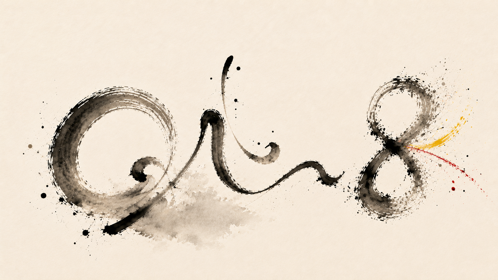

In the Mirror
The first public release. A song about self-reflection, reversed time and the uncertain relationship between cause and effect.

An artist project from Omni8 Records
Music discovered somewhere between intention and accident
I am proud to be the first public artist to emerge from the Omni8 Records workshop.
My motivation is to seek, listen and shape — until the result becomes slightly worse than the previous version.
That is usually when I know I may be getting close to Almost.
Omni8 is still becoming.
So is this page.
“The old piano was just here. I can smell it!”

I treat songs as places to explore rather than products to manufacture.
AI may enter the room, but listening, judgement and human curiosity decide what leaves it.
I welcome silence, contrast, small stories, musical accidents — and the occasional moment that makes me look up and wonder what just happened.
The first public release. A song about self-reflection, reversed time and the uncertain relationship between cause and effect.

You and me and the sand on the beach.
Omni8 is an artist project by Ulf Jacob Krystad.
For artist, release and verification enquiries: